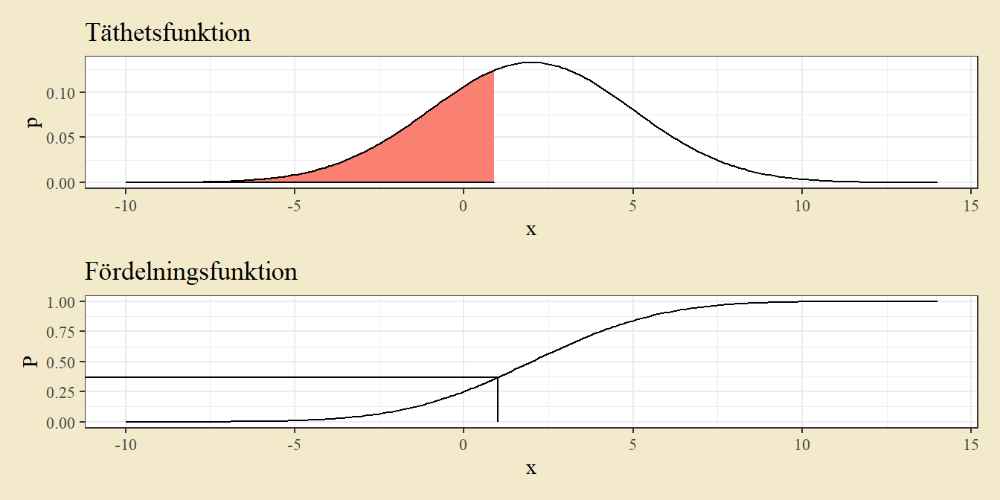
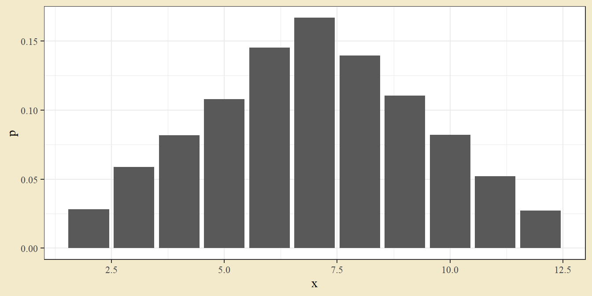
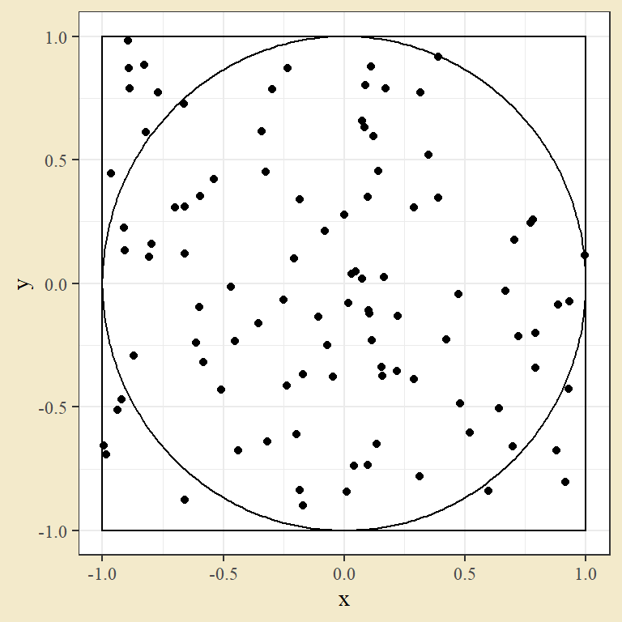
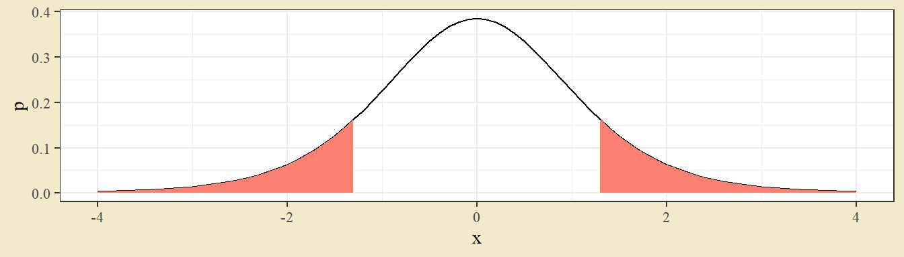
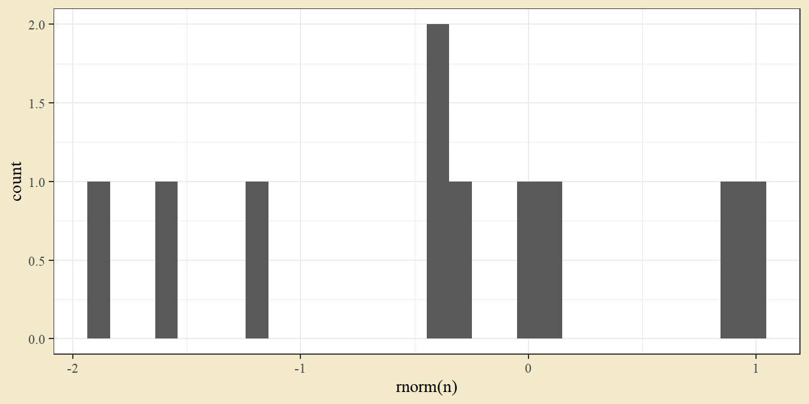
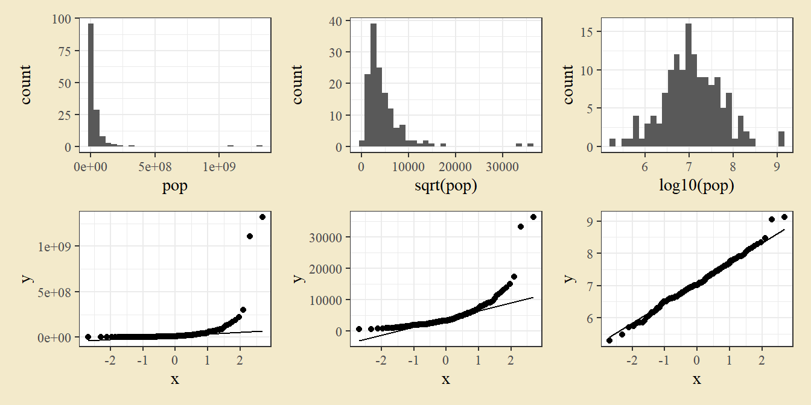

Kapitel 8 Två stickprov
8.1 Normalfördelad data (eller stora stickprov)
t-test för två stickprov används för att jämföra två grupper och se om de har samma populationsmedelvärde i någon insamlad utfallsvariabel. Det finns två specifika fall: t-test för matchade stickprov, där det finns en parvis koppling mellan de två stickproven, t.ex. att de är mätningar på två syskon; och t-test för oberoende stickprov, där det saknas en sådan koppling mellan stickproven.
8.1.1 t-test för två matchade stickprov
Vid matchade stickprov kan varje observation i en behandlingsgrupp paras med en observation i den andra gruppen. Själva testet är ett t-test för ett stickprov på differensserien beräknat från varje par. I R kan man antingen beräkna den differensserien eller använda t.test-funktionen med två dataserier och argumentet för parvisa observationer satt till sant, paired = T.
Som exempel ges följande data från en studie på äpple, där trädhöjd mätts före och efter en näringsbehandling.
dat <- tibble(TrädID = 1:4,
`Tidpunkt 1` = c(48, 43, 30, 47),
`Tidpunkt 2` = c(51, 44, 42, 54))
dat## # A tibble: 4 × 3
## TrädID `Tidpunkt 1` `Tidpunkt 2`
## <int> <dbl> <dbl>
## 1 1 48 51
## 2 2 43 44
## 3 3 30 42
## 4 4 47 54Datan kan illustreras med ett punktdiagram där en linje binder samman paret. För att enkelt skapa grafen i ggplot2 kan man först omstrukturera datan till lång form genom pivot_longer.
dat_long <- dat %>% pivot_longer(-TrädID)
dat_long## # A tibble: 8 × 3
## TrädID name value
## <int> <chr> <dbl>
## 1 1 Tidpunkt 1 48
## 2 1 Tidpunkt 2 51
## 3 2 Tidpunkt 1 43
## 4 2 Tidpunkt 2 44
## 5 3 Tidpunkt 1 30
## 6 3 Tidpunkt 2 42
## 7 4 Tidpunkt 1 47
## 8 4 Tidpunkt 2 54ggplot(dat_long, aes(name, value, group = TrädID)) +
geom_point() +
geom_line()
Testet för parade stickprov kan antingen utföras som ett enkelt t-test på differensserien
t.test(dat$`Tidpunkt 2` - dat$`Tidpunkt 1`)##
## One Sample t-test
##
## data: dat$`Tidpunkt 2` - dat$`Tidpunkt 1`
## t = 2.3681, df = 3, p-value = 0.09868
## alternative hypothesis: true mean is not equal to 0
## 95 percent confidence interval:
## -1.977405 13.477405
## sample estimates:
## mean of x
## 5.75eller som ett t-test för två stickprov där man särskilt anger att datan är parad
t.test(dat$`Tidpunkt 1`, dat$`Tidpunkt 2`, paired = T)##
## Paired t-test
##
## data: dat$`Tidpunkt 1` and dat$`Tidpunkt 2`
## t = -2.3681, df = 3, p-value = 0.09868
## alternative hypothesis: true mean difference is not equal to 0
## 95 percent confidence interval:
## -13.477405 1.977405
## sample estimates:
## mean difference
## -5.75För bägge alternativen måste datan vara ordnad så att de två vektorerna matchar varandra parvis. Notera att ordningen på vektorerna påverkar konfidensintervall men inte p-värdet (i fallet med en tvåsidig mothypotes). Här är det naturligt att ta den andra mätningen först eftersom konfidensintervallet då blir ett intervall för medelvärdesökningen efter behandling. Ett p-värde på \(0.0987\) ger att man inte förkastar vid en signifikansnivå på fem procent.
8.1.2 t-test för två oberoende stickprov
Ett t-test för två oberoende stickprov testar om två populationsmedelvärden är lika. Ta som exempel följande data på jordgubbsskörd vid två olika näringsbehandlingar (A och B). Här är stickprov inte matchade - det finns ingen direkt koppling mellan en observation i den ena behandlingsgruppen till någon observation i den andra.
dat <- tibble(Behandling = c("A", "A", "A", "A", "B", "B", "B", "B"),
Vikt = c(40, 48.2, 39.2, 47.9, 57.5, 61.5, 58, 66.5))
kable(dat)| Behandling | Vikt |
|---|---|
| A | 40.0 |
| A | 48.2 |
| A | 39.2 |
| A | 47.9 |
| B | 57.5 |
| B | 61.5 |
| B | 58.0 |
| B | 66.5 |
Datan kan illustreras med ett enkelt punktdiagram. I ett publiceringssammanhang hade det kanske presenterats med ett stapeldiagram med felstaplar.
g1 <- ggplot(dat, aes(Behandling, Vikt)) +
geom_point()
g2 <- dat %>%
group_by(Behandling) %>%
summarise(m = mean(Vikt), s = sd(Vikt)) %>%
ggplot(aes(Behandling, m)) +
geom_bar(stat = "identity", fill = "grey80", width = 0.3) +
geom_errorbar(aes(ymin = m - s, ymax = m + s), width = 0.1)
library(patchwork)
g1 + g2
Ett t-test för två oberoende stickprov har nollhypotesen att grupperna har samma populationsmedelvärde och alternativhypotesen att populationsmedelvärdena är skilda (för det tvåsidiga fallet):
\[\mu_1 = \mu_2 \qquad \mu_1 \neq \mu_2.\]
Testet kan utföras i R genom funktionen t.test. Data kan antingen anges som en formel med dess data Vikt ~ Behandling, data = dat (vilket man kan läsa som vikt uppdelat efter behandling) eller som två skilda vektorer. Det förra alternativet är oftast enklare om man har datan på lång form - med en kolumn som anger grupp (i exemplet Behandling) och en kolumn som anger utfallsvärdet (i exemplet Vikt).
# Formelskrivning
t.test(Vikt ~ Behandling, data = dat, var.equal = T)##
## Two Sample t-test
##
## data: Vikt by Behandling
## t = -5.3157, df = 6, p-value = 0.001803
## alternative hypothesis: true difference in means between group A and group B is not equal to 0
## 95 percent confidence interval:
## -24.898417 -9.201583
## sample estimates:
## mean in group A mean in group B
## 43.825 60.875# Två separata vektorer
## Filtrera ut data där behandling är A
Vikt_A <- dat$Vikt[dat$Behandling == "A"]
## Filtrera ut data där behandling är B
Vikt_B <- dat$Vikt[dat$Behandling == "B"]
t.test(Vikt_A, Vikt_B, var.equal = T)##
## Two Sample t-test
##
## data: Vikt_A and Vikt_B
## t = -5.3157, df = 6, p-value = 0.001803
## alternative hypothesis: true difference in means is not equal to 0
## 95 percent confidence interval:
## -24.898417 -9.201583
## sample estimates:
## mean of x mean of y
## 43.825 60.875Argumentet var.equal = T används för att beräkna testet där gruppernas varianser antas vara lika. Grundinställningen är testet där varianser inte antas vara lika, så t.test(Vikt ~ Behandling, data = dat) ger ett lite annat resultat.
Testet ger ett p-värde på \(0.0018\), vilket leder till att nollhypotesen förkastas på enprocentsnivån. Detta tyder på att det finns en viktskillnad mellan behandlingarna. Utskriften ger också ett 95-procentigt konfidensintervall på \((-24.898, -9.202)\). Tolkningen är att skillnaden mellan populationsmedelvärden ligger i intervallet med 95 procents konfidens. Notera att värdet noll inte ligger i intervallet.
8.2 Binär data. Proportioner
Om man vill jämföra två proportioner kan man använda z-testet för två stickprov. Säg till exempel att man utvecklar den tidigare studien, som gav 17 av 50 infekterade plantor, till att undersöka ytterligare en sort och att den sorten har 26 infekterade plantor av en total på 60. Testets hypotesen är i det tvåsidiga fallet
\[H_0: p_1 = p_2 \qquad H_1: p_1 \neq p_2.\]
I R kan testet genomföras med prop.test-funktionen. Funktionens första argument är antalen infekterade, som en vektor med två värden, och dess andra argument är totalerna. Likt testet med ett stickprov finns en möjlighet att göra en kontinuitetskorrektion med correct-argumentet.
prop.test(c(17, 26), c(50, 60), correct = F)##
## 2-sample test for equality of proportions without continuity correction
##
## data: c(17, 26) out of c(50, 60)
## X-squared = 0.9978, df = 1, p-value = 0.3178
## alternative hypothesis: two.sided
## 95 percent confidence interval:
## -0.27488771 0.08822105
## sample estimates:
## prop 1 prop 2
## 0.3400000 0.4333333Notera att funktionen inte ger ett z-värde utan ett \(\chi^2\)-värde (utskrivet X-squared). Det beror på att funktionen beräknar z-testet som ett likvärdigt \(\chi^2\)-test. Det z-värde man får om man genomför testet som ett z-test är detsamma som roten ur utskriftens \(\chi^2\)-värde.
Testet ger ett högt p-värde vilket innebär att nollhypotesen inte förkastas.
8.3 Nominal eller ordinal data. Korstabeller
Data med två insamlade variabler per observerad enhet kan presenteras med en korstabell. Ta som (ett något deppigt) exempel överlevandsdata från Titanic. Datan finns tillgänglig i R som Titanic och man kan konstruera en korstabell med pivot_wider. I detta fall ges överlevnad filtrerad på vuxna män, uppdelat efter klass.
dat <- Titanic %>%
as_tibble() %>%
filter(Age == "Adult", Sex == "Male")
kable(dat)| Class | Sex | Age | Survived | n |
|---|---|---|---|---|
| 1st | Male | Adult | No | 118 |
| 2nd | Male | Adult | No | 154 |
| 3rd | Male | Adult | No | 387 |
| Crew | Male | Adult | No | 670 |
| 1st | Male | Adult | Yes | 57 |
| 2nd | Male | Adult | Yes | 14 |
| 3rd | Male | Adult | Yes | 75 |
| Crew | Male | Adult | Yes | 192 |
En korstabell kan konstrueras med pivot_wider.
dat_wide <- dat %>%
pivot_wider(names_from = Survived, values_from = n)Datan tyder på att överlevnad är beroende av klass - en tredjedel av förstaklass överlever, men en sjättedel av tredjeklass överlever. En illustration kan göras genom ett stapeldiagram.
ggplot(dat, aes(Class, n, fill = Survived)) +
geom_bar(stat = "identity", position = position_fill(),
color = "black", width = 0.5) +
scale_fill_manual(values = c("black", "white")) +
ylab("Proportion")
Argumentet position i geom_bar används för att skapa proportionella staplar.
Ett \(\chi^2\)-test på en korstabell har nollhypotesen att det inte finns något samband mellan variabeln för rader och variabeln för kolumner. Antal frihetsgrader ges av antal rader minus ett gånger antal kolumner minus ett. Testet kan enkelt göras med chisq.test. Som ingångsvärde kan man plocka ut kolumnerna med numeriska värden genom hakparenteser.
dat_wide[, 4:5] # De två numeriska kolumnerna## # A tibble: 4 × 2
## No Yes
## <dbl> <dbl>
## 1 118 57
## 2 154 14
## 3 387 75
## 4 670 192chisq.test(dat_wide[, 4:5])##
## Pearson's Chi-squared test
##
## data: dat_wide[, 4:5]
## X-squared = 37.988, df = 3, p-value = 2.843e-08Utskriften ger teststorheten, antal frihetsgrader, och p-värdet. I det här fallet är p-värdet mycket litet (skrivning med e ska läsas som \(2.843e-8 = 2.843 \cdot 10^{-8} = 0.00000002843\)) och slutsatsen blir att nollhypotesen förkastas - det finns ett samband mellan klass och överlevnad. Antalet frihetsgrader ges av antalet rader minus ett gånger antalet kolumner minus ett (här \((4-1) \cdot (2-1) = 3\)).
\(\chi^2\)-test är ett asymptotiskt test - dess egenskaper är beroende av stora stickprov. Som gräns för storleken används ofta att samtliga förväntade antal ska vara större än 5. Funktionen ger en varning om förväntade värden är små. En möjlig lösning i sådana fall är att slå ihop klasser.
test_result <- chisq.test(dat_wide[, 4:5])
test_result$expected # Samtliga förväntade värden över 5## No Yes
## [1,] 139.5171 35.48290
## [2,] 133.9364 34.06359
## [3,] 368.3251 93.67487
## [4,] 687.2214 174.77864Om detta krav inte är uppfyllt skriver funktionen ut en varning.
dat <- matrix(c(4,2,5,1), 2)
test_result <- chisq.test(dat)
test_result$expected## [,1] [,2]
## [1,] 4.5 4.5
## [2,] 1.5 1.58.4 Övningar
Övning 8.1 (Lök) Åtta monoglukosidmätningar på lök samlas in från fyra konventionella och fyra ekologiska ordlare.
| Odlingstyp | Monoglukosid |
|---|---|
| Ekologisk | 135.7 |
| Ekologisk | 186.7 |
| Ekologisk | 182.0 |
| Ekologisk | 180.5 |
| Konventionell | 138.9 |
| Konventionell | 155.1 |
| Konventionell | 126.3 |
| Konventionell | 120.1 |
a. Genomför ett hypotestest för att se om det finns en medelvärdesskillnad mellan odlingstyperna.
b. Beräkna ett 95-procentigt konfidensintervall för skillnaden i medelvärde.
Lösningsförslag 8.1 (Lök) Datan kan importeras från excelfilen med uppgiftsdata. En lämplig graf kan skapas genom att pivotera till långform och plotta med ggplot.
dat <- readxl::read_excel("Data/Uppgiftsdata.xlsx", sheet = "Lökfärg")
dat %>%
pivot_longer(-Odlare, names_to = "Odlingstyp",
values_to = "Monoglukosid") %>%
ggplot(aes(Odlingstyp, Monoglukosid)) +
geom_point()
a. Eftersom det inte finns någon koppling mellan odlare är ett t-test för två oberoende stickprov ett lämpligt test. Testet kan genomföras med eller utan ett antagande om lika varianser inom grupperna.
t.test(dat$Konventionell, dat$Ekologisk, var.equal = T)##
## Two Sample t-test
##
## data: dat$Konventionell and dat$Ekologisk
## t = -2.5436, df = 6, p-value = 0.04387
## alternative hypothesis: true difference in means is not equal to 0
## 95 percent confidence interval:
## -70.877089 -1.372911
## sample estimates:
## mean of x mean of y
## 135.100 171.225t.test(dat$Konventionell, dat$Ekologisk, var.equal = F)##
## Welch Two Sample t-test
##
## data: dat$Konventionell and dat$Ekologisk
## t = -2.5436, df = 5.145, p-value = 0.05033
## alternative hypothesis: true difference in means is not equal to 0
## 95 percent confidence interval:
## -72.32625466 0.07625466
## sample estimates:
## mean of x mean of y
## 135.100 171.225Hypotestestet (ett t-test för två oberoende stickprov) ger ett p-värde på \(0.0439\) eller \(0.0503\), beroende på om varianser inom grupperna antas lika eller ej.
Om man har fler än två grupper kan man vilja göra parvisa t-test - alltså ett t-test för varje par av grupper.
Ett exempel på funktionen pairwise.t.test ges nedan. Funktionen bygger på att datan är i lång form, med en kolumn som anger det numeriska utfallet och en kolumn som anger behandlingen.
dat_long <- dat %>%
pivot_longer(-Odlare, names_to = "Odlingstyp",
values_to = "Monoglukosid")
kable(dat_long)| Odlare | Odlingstyp | Monoglukosid |
|---|---|---|
| 1 | Konventionell | 138.9 |
| 1 | Ekologisk | 135.7 |
| 2 | Konventionell | 155.1 |
| 2 | Ekologisk | 186.7 |
| 3 | Konventionell | 126.3 |
| 3 | Ekologisk | 182.0 |
| 4 | Konventionell | 120.1 |
| 4 | Ekologisk | 180.5 |
pairwise.t.test(dat_long$Monoglukosid, dat_long$Odlingstyp,
p.adjust.method = "none", pool.sd = F)##
## Pairwise comparisons using t tests with non-pooled SD
##
## data: dat_long$Monoglukosid and dat_long$Odlingstyp
##
## Ekologisk
## Konventionell 0.05
##
## P value adjustment method: noneb. Om varianser antas lika ges ett 95-procentigt konfidensintervall av \((-70.9, -1.4)\). Notera att ett 95-procentigt intervall inte täcker noll, vilket är i linje med att p-värdet är mindre än 5 procent.
Övning 8.2 (Ekorrar) I en undersökning av hur den europeiska ekorren (Sciurus vulgaris) förändras i vikt under övervintring mäts 7 slumpmässigt valda ekorrar före och 5 slumpmässigt valda ekorrar efter övervintring. Resultaten ges av tabell.
| Tidpunkt | Vikt |
|---|---|
| Före | 537 |
| Före | 597 |
| Före | 445 |
| Före | 556 |
| Före | 585 |
| Före | 542 |
| Före | 415 |
| Efter | 302 |
| Efter | 326 |
| Efter | 377 |
| Efter | 469 |
| Efter | 417 |
Medelvärde och standardavvikelse per grupp ges av följande.
| Tidpunkt | Medelvikt | Standardavvikelse |
|---|---|---|
| Efter | 378.2000 | 67.6070 |
| Före | 525.2857 | 69.1344 |
Antag normalfördelad data och lika populationsvarianser i de bägge grupperna.
a. Konstruera ett 95-procentigt konfidensintervall för vikten före övervintring.
b. Gör ett hypotestest för att se om det är någon skillnad i vikt före och efter vintern. Använd signifikansnivån 5%.
c. Ett problem med att mäta skilda individer före och efter övervintring är att det kan finnas en stor skillnad i vikt mellan ekorrar. Kan man lägga upp försöket på ett sätt som reducerar det problemet?
(Detta är en tentamensuppgift från 2019.)
Lösningsförslag 8.2 (Ekorrar) Data läses in från kursdatan, fliken Ekorrar.
dat <- read_excel("Data/Uppgiftsdata.xlsx", sheet = "Ekorrar")En illustration kan skapas som en punktdiagram med tidpunkt på ena axeln och vikt på den andra. Notera i det steget att det inte finns några lika vikter, och därmed inga överlappande punkter.
ggplot(dat, aes(Vikt, Tidpunkt)) + geom_point()
Grafen visar på högre vikter före vintern.
a. Ett konfidensintervall kan skapas genom att filtrera datan för observationerna före vintern och sedan skapa intervallet med t.test.
dat_före <- dat %>% filter(Tidpunkt == "Före")
t.test(dat_före$Vikt)##
## One Sample t-test
##
## data: dat_före$Vikt
## t = 20.103, df = 6, p-value = 9.84e-07
## alternative hypothesis: true mean is not equal to 0
## 95 percent confidence interval:
## 461.3470 589.2244
## sample estimates:
## mean of x
## 525.2857Utskriften ger intervallet \((461.35, 589.22)\), vilket ger tolkningen att populationsmedelvärdet för ekorrvikt före vintern ligger i det intervallet med 95 procents konfidens.
b. Datan är på lång form - ett t-test genomförs enklast med formelskrivningen Vikt ~ Tidpunkt. Testet kan genomföras med eller utan antagandet om lika varianser i grupperna.
t.test(Vikt ~ Tidpunkt, dat)##
## Welch Two Sample t-test
##
## data: Vikt by Tidpunkt
## t = -3.6807, df = 8.8977, p-value = 0.00517
## alternative hypothesis: true difference in means between group Efter and group Före is not equal to 0
## 95 percent confidence interval:
## -237.64404 -56.52739
## sample estimates:
## mean in group Efter mean in group Före
## 378.2000 525.2857t.test(Vikt ~ Tidpunkt, dat, var.equal = T)##
## Two Sample t-test
##
## data: Vikt by Tidpunkt
## t = -3.6656, df = 10, p-value = 0.004348
## alternative hypothesis: true difference in means between group Efter and group Före is not equal to 0
## 95 percent confidence interval:
## -236.49116 -57.68027
## sample estimates:
## mean in group Efter mean in group Före
## 378.2000 525.2857c. Om man mäter samma individ före och efter vintern och sedan analyserar viktförändringen över tid försvinner variansen mellan individer.
Övning 8.3 (Burfågel) I en undersökning av lungcancerpatienter finner man följande antal.
| Lungcancer | Ej lungcancer | |
|---|---|---|
| Burfågel | 98 | 101 |
| Ej burfågel | 141 | 328 |
Genomför ett z-test för att se om andelen burfågelägare än densamma i de två grupperna.
Lösningsförslag 8.3 (Burfågel) Frågan är om proportionen burfågelägare bland patienter är densamma som proportionen burfågelägare bland icke-drabbade. Man ska alltså ställa proportionen 98 av 239 mot 101 av 429.
prop.test(c(98, 101), c(98 + 141, 101 + 328), correct = F)##
## 2-sample test for equality of proportions without continuity correction
##
## data: c(98, 101) out of c(98 + 141, 101 + 328)
## X-squared = 22.374, df = 1, p-value = 2.244e-06
## alternative hypothesis: two.sided
## 95 percent confidence interval:
## 0.1004485 0.2487727
## sample estimates:
## prop 1 prop 2
## 0.4100418 0.2354312Det låga p-värdet tyder på att det finns skillnader mellan grupperna.
Övning 8.4 (Po-ta-toes) I en undersökning på potatis används fyra behandlingar (a1b1, a1b2, a2b1 och a2b2). 125 potatisar från varje behandling sorteras in i fyra olika färggrupper (A, B, C och D). Frekvenstabellen ges av följande.
| Färg | a1b1 | a1b2 | a2b1 | a2b2 |
|---|---|---|---|---|
| A | 56 | 64 | 36 | 38 |
| B | 45 | 36 | 44 | 48 |
| C | 18 | 13 | 27 | 20 |
| D | 6 | 12 | 18 | 19 |
Genomför ett lämpligt test för att se om det finns färgskillnader mellan behandlingarna.
Lösningsförslag 8.4 (Po-ta-toes) Funktionen matrix kan användas för att skapa korstabellen. Tabellen kan sedan tas som ingångsvärde till chisq.test.
dat <- matrix(c(56,64,36,38,
45,36,44,48,
18,13,27,20,
6,12,18,19),
nrow = 4, byrow = T)
test <- chisq.test(dat)
test##
## Pearson's Chi-squared test
##
## data: dat
## X-squared = 26.518, df = 9, p-value = 0.00168I ett \(\chi^2\)-test är nollhypotesen att kolumner och rader är oberoende. Det låga p-värdet tyder på att nollhypotesen bör förkastas, vilket tyder på att det finns ett samband mellan behandling och färg.
Datan kan illustreras med ett stapeldiagram.
dat_long <- dat %>%
as_tibble() %>%
mutate(Färg = c("A", "B", "C", "D")) %>%
pivot_longer(-Färg)
ggplot(dat_long, aes(name, value, fill = Färg)) +
geom_bar(stat = "identity", col = "black", width = 0.6) +
scale_fill_brewer(palette = "Reds")
Övning 8.5 (Mer burfågel) En tidigare uppgift gav följande data kring en eventuell koppling mellan fågelägande och lungcancer.
| Lungcancer | Ej lungcancer | |
|---|---|---|
| Burfågel | 98 | 101 |
| Ej burfågel | 141 | 328 |
Genomför ett \(\chi^2\)-test för att se om det finns något signifikant samband mellan variablerna.
Lösningsförslag 8.5 (Mer burfågel) För att genomföra \(\chi^2\)-testet kan man skriva in data som en 2-gånger-2-matris med funktionen matrix.
dat <- matrix(c(98, 141, 101, 328), nrow = 2)
chisq.test(dat, correct = F)##
## Pearson's Chi-squared test
##
## data: dat
## X-squared = 22.374, df = 1, p-value = 2.244e-06Samma resultat som i den tidigare beräkningen på samma data.
Övning 8.6 (Allsvenskan. Genomsnittligt antal mål) Bland kursdata finns datafiler med allsvenska matcher för damer (2000-2020) och herrar (1924-2019). Det genomsnittliga antalet mål i respektive serie ges för åren 2000-2009 av följande tabell.
dat_dam <- read_csv("Data/Allsvenskan, damer, 2000-2020.csv")
dat_herr <- read_csv("Data/Allsvenskan, herrar, 1924-2019.csv")
dat_dam_medel <- dat_dam %>%
group_by(sasong) %>%
summarise(Mål = mean(hemmamal + bortamal)) %>%
filter(sasong %in% 2000:2009)
dat_herr_medel <- dat_herr %>%
group_by(sasong) %>%
summarise(Mål = mean(hemmamal + bortamal)) %>%
filter(sasong %in% 2000:2009) %>%
mutate(sasong = as.numeric(sasong))
dat_total <- dat_dam_medel %>%
mutate(Allsvenska = "Dam") %>%
bind_rows(dat_herr_medel %>% mutate(Allsvenska = "Herr")) %>%
rename(Säsong = sasong)
dat_total %>%
pivot_wider(values_from = Mål, names_from = Allsvenska) %>%
kable(digits = 2)| Säsong | Dam | Herr |
|---|---|---|
| 2000 | 3.68 | 2.87 |
| 2001 | 3.72 | 2.94 |
| 2002 | 3.65 | 2.81 |
| 2003 | 3.97 | 2.85 |
| 2004 | 3.65 | 2.43 |
| 2005 | 3.54 | 2.68 |
| 2006 | 3.17 | 2.58 |
| 2007 | 3.37 | 2.56 |
| 2008 | 3.38 | 2.65 |
| 2009 | 3.33 | 2.43 |
a. Jämför serierna med en lämplig graf.
b. Beräkna ett konfidensintervall för det genomsnittliga antalet mål i allsvenskan för damer.
c. Genomför ett lämpligt test för att se om serierna har samma populationsmedelvärde för antal mål. Diskutera om datan bör ses som parad (två observationer per år).
Lösningsförslag 8.6 (Allsvenskan. Genomsnittligt antal mål) a. Datan kan illustreras med ett linjediagram med två separata linjer.
# Fortsättning från inläsningen ovan
ggplot(dat_total, aes(Säsong, Mål, col = Allsvenska)) +
geom_line(size = 2)
Allsvenskan för damer har ett högre genomsnittligt antal mål än allsvenskan för herrar.
b. Konfidensintervall kan beräknas med t.test efter att observationer för damer filtrerats ut.
dat <- dat_total %>% filter(Allsvenska == "Dam")
t.test(dat$Mål)##
## One Sample t-test
##
## data: dat$Mål
## t = 47.784, df = 9, p-value = 3.858e-12
## alternative hypothesis: true mean is not equal to 0
## 95 percent confidence interval:
## 3.378329 3.714095
## sample estimates:
## mean of x
## 3.546212Konfidensintervallet ges av \((3.37, 3.71)\). Det sanna populationsmedelvärdet ligger med 95-procents konfidens i det intervallet.
c. Ett lämpligt test kan genomföras med t.test. Nollhypotesen är att serierna har samma populationsmedelvärde och att den skillnad man kan se därmed enbart är slumpmässig variation.
t.test(Mål ~ Allsvenska, dat_total)##
## Welch Two Sample t-test
##
## data: Mål by Allsvenska
## t = 9.24, df = 16.897, p-value = 5.129e-08
## alternative hypothesis: true difference in means between group Dam and group Herr is not equal to 0
## 95 percent confidence interval:
## 0.6677709 1.0631973
## sample estimates:
## mean in group Dam mean in group Herr
## 3.546212 2.680728Det låga p-värdet ger att nollhypotesen bör förkastas - man kan dra slutsatsen att allsvenskan för damer har högre genomsnittligt antal mål än allsvenskan för herrar.
I det här fallet kan man diskutera om det inte är mer lämpligt att använda ett t-test för parade observation, eftersom det är två observationer per år. Ett argument mot det är att det inte finns någon egentlig anledning att tro att det skulle finnas något samband mellan antal mål för damer respektive för herrar ett visst år.
Övning 8.7 (Nature's mosquito) En viktig del i arbetet mot spridning av malaria är att förstå myggors reaktion på dofter. Ett vanligt sätt att undersöka detta är att följa flyktmönster i en sluten vindtunnel. I ett försök har man en vindtunnel med måtten 60 x 30 x 100 cm (bredd, höjd, djup). I den ena änden finns två doftkällor placerade i jämn höjd, med 30 centimeters mellanrum. I den andra änden släpper man en mygga i taget och genom videoinspelning kan man beräkna dess position varje tiondels sekund. Försöket omfattar 60 individer av två arter. Datan finns tillgänglig bland kursdatan i filen Mosquitos.csv.
a. Illustrera en eller flera myggors flykt med ett passande diagram. En möjlighet är att ha z-koordinaten på den horisontella axeln och x-koordinaten på den vertikala axeln och göra en spårlinje med geom_path. Den linjen motsvarar då flykten sedd från ovan. Eftersom flykten anges med x-, y- och z-koordinater kan man även illustrera det som en tre-dimensionell graf, till exempel med rgl-paketet.
b. Det är möjligt att ta fram myggornas landningspunkt på bortre änden genom att filtera på värden där Proportional_time är 1. Man får då följande värden på x-koordinaten.
| Aedes africanus | Aedes aegypti |
|---|---|
| -9.94 | 8.54 |
| -10.75 | 1.18 |
| -4.97 | -1.55 |
| -3.50 | -1.65 |
| -3.63 | 7.64 |
| -11.39 | 4.99 |
| -15.98 | -3.77 |
| 2.01 | 4.53 |
| -13.19 | 3.18 |
| -4.51 | 9.63 |
| -6.17 | 5.83 |
| -11.56 | -0.26 |
| -5.38 | 3.71 |
| -3.88 | 3.07 |
| -1.83 | 5.15 |
| -4.04 | 0.02 |
| -5.80 | -0.45 |
| 2.12 | -5.83 |
| -13.67 | 7.14 |
| -14.61 | 12.28 |
| -3.46 | -3.50 |
| -8.02 | 5.83 |
| 0.20 | 1.43 |
| -14.54 | -8.64 |
| -17.62 | 5.14 |
| -10.41 | -0.11 |
| 1.03 | 13.40 |
| -6.06 | 14.80 |
| -3.41 | -6.91 |
| -0.48 | 8.38 |
Konstruera ett lådagram över x-koordinaterna för de 60 individerna vid landningstillfället. Dela grafen så att arterna visas i skilda lådagram. Finns det tecken på skillnader i landningspunkt?
c. Genomför ett lämpligt t-test för att se om det finns skillnader mellan arterna, med avseende på x-koordinat vid landningstillfället.
d. Konstruera ett konfidensintervall för medelvärdet av x-koordinaten vid landning för Aedes aegypti. Använd intervallet för att se om medelvärdet är statistiskt signifikant skilt från 0.
e. Om man bara sorterar individer efter om de landar på den högra eller vänstra halvan av den borde änden kan man ställa upp följande korstabell.
| Species | Left | Right |
|---|---|---|
| Aedes aegypti | 10 | 20 |
| Aedes africanus | 26 | 4 |
Genomför ett lämpligt z-test eller \(\chi^2\)-test för att se om det finns en statistiskt säkerställd skillnad i landningsposition mellan arterna.
Frågan är baserad på Hinze et al (2021) Mosquito Host Seeking in 3D Using a Versatile Climate-Controlled Wind Tunnel System.
Lösningsförslag 8.7 (Nature's mosquito) Datan importas med read_csv.
dat <- read_csv("Data/Mosquitos.csv")a. En passande graf kan konstrueras med ggplot2 och geom_path. Med två grafer kan man illustrera flykten från sidan och från ovan. Färger kan separera arterna. Den specifika individen måste sättas med group = id för att den enskilda flykten ska bli en egen linje.
Ett exempel på en enskild individ.
dat_ind1 <- dat %>% filter(id == 1)
g1 <- ggplot(dat_ind1, aes(z, y, group = id, col = Species)) +
geom_path() +
labs(title = "Från sidan")
g2 <- ggplot(dat_ind1, aes(z, x, group = id, col = Species)) +
geom_path() +
labs(title = "Från ovan")
library(patchwork)
g1 / g2
Ett exempel med samtliga individer i en (rörig) illustration.
g1 <- ggplot(dat, aes(z, y, group = id, col = Species)) +
geom_path(alpha = 0.5) +
labs(title = "Från sidan")
g2 <- ggplot(dat, aes(z, x, group = id, col = Species)) +
geom_path(alpha = 0.5) +
labs(title = "Från ovan")
library(patchwork)
g1 / g2
R har paket med funktioner för tre-dimensionella grafer. Ett exempel är genom paketet rgl och funktionerna plot3d och lines3d.
# install.packages(rgl)
library(rgl)
# En enskild mygga plottad med plot3d
# Det första argumentet är de tre koordinatvariablerna efter filter på första individen
plot3d(dat %>% filter(id == 1) %>% select(z, x, y), type = "l", asp = F, col = "blue", alpha = 0.15)
# Övriga flykter tillagda med lines3d i en for-loop
# Loopen går inom samtliga individer och lägger till linjen till 3d-grafen
for(i in 1:60){
lines3d(dat %>% filter(id == i) %>% select(z, x, y),
col = ifelse(dat %>% filter(id == i) %>% pull(Species) == "Aedes africanus", "blue", "red"),
alpha = 0.15)
}
# Skapa punkter för landningsplatsen
points3d(dat %>% filter(Proportional_time == 1) %>% select(z, x, y), size = 6,
col = ifelse(dat %>% filter(Proportional_time == 1) %>% pull(Species) == "Aedes africanus", "blue", "red"))b. För att titta på landningsplatser filtreras på de observationer där den proportionella observationstiden är 1 (den sista observationen). Därefter kan en lämplig graf skapas med geom_boxplot med art på x-axeln och x-koordinaten på grafens y-axel.
dat_endtime <- dat %>% filter(Proportional_time == 1)
ggplot(dat_endtime, aes(Species, x)) + geom_boxplot()
Aedes aegypti uppvisar högre x-koordinater, vilket tyder på att den arten varit mer lockad av doftämnet till höger.
c. Ett t-test för oberoende stickprov kan genomföras genom att ta x-koordinaten som utfallsvariabel och arterna som de två grupperna. Testet kan genomföras med eller utan antaganden om lika varianser inom grupperna. Nollhypotesen är arterna har samma populationsmedelvärde i x-koordinaten vid landningstillfället.
t.test(x ~ Species, dat_endtime)##
## Welch Two Sample t-test
##
## data: x by Species
## t = 6.7001, df = 57.845, p-value = 9.436e-09
## alternative hypothesis: true difference in means between group Aedes aegypti and group Aedes africanus is not equal to 0
## 95 percent confidence interval:
## 6.93371 12.84229
## sample estimates:
## mean in group Aedes aegypti mean in group Aedes africanus
## 3.106667 -6.781333t.test(x ~ Species, dat_endtime, var.equal = T)##
## Two Sample t-test
##
## data: x by Species
## t = 6.7001, df = 58, p-value = 9.331e-09
## alternative hypothesis: true difference in means between group Aedes aegypti and group Aedes africanus is not equal to 0
## 95 percent confidence interval:
## 6.933879 12.842121
## sample estimates:
## mean in group Aedes aegypti mean in group Aedes africanus
## 3.106667 -6.781333Bägge testet ger stark signifikans. Man drar slutsatsen att det finns en skillnad mellan arterna.
d. Ett konfidensintervall kan tas fram med t.test efter filtrering på art så att enbart aegypti förekommer i datan.
dat_endtime_aegypti <- dat_endtime %>% filter(Species == "Aedes aegypti")
t.test(dat_endtime_aegypti$x)##
## One Sample t-test
##
## data: dat_endtime_aegypti$x
## t = 2.9029, df = 29, p-value = 0.006996
## alternative hypothesis: true mean is not equal to 0
## 95 percent confidence interval:
## 0.9178614 5.2954719
## sample estimates:
## mean of x
## 3.106667Intervallet ges av \((0.92, 5.30)\). Eftersom 0 inte ingår i det 95-procentiga konfidensintervallet är det statistiskt signifikant (på 5-procentsnivån) att populationsmedelvärdet skiljer sig från 0.
e. Antalet kan antingen skrivas in från siffrorna i uppgiften eller beräknas från data genom att koda om x-koordinaten till höger respektive vänster beroende på om x är större eller mindre än 0. Därefter kan ett test genomföras med chisq.test. Nollhypotesen är att populationsproportionen högergående (eller vänstergående) är lika stor för de två arterna.
dat_prop <- dat_endtime %>%
count(Species, Direction = ifelse(x < 0, "Left", "Right")) %>%
pivot_wider(names_from = Direction, values_from = n)
chisq.test(dat_prop %>% select(Left, Right))##
## Pearson's Chi-squared test with Yates' continuity correction
##
## data: dat_prop %>% select(Left, Right)
## X-squared = 15.625, df = 1, p-value = 7.723e-05Testet pekar på en skillnad i proportionen höger- respektive vänstergående mellan arterna.
Övning 8.8 (Röda rummet, Gösta Berlings saga, och okänd) Bland kursdatan finns text till Selma Lagerlöfs Gösta Berlings saga och August Strindbergs Röda rummet, i kolumnform. Det finns också en text med okänd författare (filen Den tredje boken). En ytlig textanalys kan baseras på frekvensen för olika ord. Närliggande tabell ger antalet förekomster för texternas fem vanligaste ord i första kapitlet av varje text.
dat_rr <- read_csv("Data/Röda rummet.csv") %>%
mutate(Bok = "Röda rummet")
dat_gbs <- read_csv("Data/Gösta Berlings saga.csv") %>%
mutate(Bok = "Gösta Berlings saga")
dat_tredje <- read_csv("Data/Den tredje boken.csv") %>%
mutate(Bok = "Okänd")
dat_full <- bind_rows(dat_rr, dat_gbs, dat_tredje)
vanligaste_ord <- dat_full %>%
count(Ord, sort = T) %>%
slice(1:5) %>%
pull(Ord)
dat_ord <- dat_full %>%
filter(Ord %in% vanligaste_ord, Kapitel == 1) %>%
count(Bok, Ord)
dat_ord_wide <- dat_ord %>%
pivot_wider(names_from = Bok, values_from = n) %>%
arrange(desc(`Gösta Berlings saga` + Okänd + `Röda rummet`))
kable(dat_ord_wide)| Ord | Gösta Berlings saga | Okänd | Röda rummet |
|---|---|---|---|
| och | 109 | 143 | 166 |
| han | 116 | 115 | 52 |
| att | 67 | 130 | 74 |
| det | 46 | 91 | 63 |
| i | 52 | 58 | 83 |
a Illustrera frekvenserna med en lämplig graf.
b. Genomför två \(\chi^2\)-test för att se vilken av Gösta Berlings saga och Röda rummet den okända texten är mest lik (sett till de fem vanligaste orden).
Lösningsförslag 8.8 (Röda rummet, Gösta Berlings saga, och okänd) a. En möjlig illustration är ett stapeldiagram för proportion av varje ord inom respektive text.
dat_ord %>%
ggplot(aes(Bok, n, fill = Ord)) +
geom_bar(stat = "identity", position = position_fill(), col = "black")
Röda rummet har större andel förekomster av och och i.
b. Två \(\chi^2\)-test kan användas för att ställa de kända verken mot det okända verket. Detta kan göras genom att välja kolumner från dat_ord_wide med hakparenteser.
# Gösta Berlings saga (kolumn 2) mot okänd text (kolumn 3)
chisq.test(dat_ord_wide[, 2:3])##
## Pearson's Chi-squared test
##
## data: dat_ord_wide[, 2:3]
## X-squared = 16.963, df = 4, p-value = 0.001965# Röda rummet (kolumn 4) mot okänd text (kolumn 3)
chisq.test(dat_ord_wide[, 3:4])##
## Pearson's Chi-squared test
##
## data: dat_ord_wide[, 3:4]
## X-squared = 40.742, df = 4, p-value = 3.039e-08Bägge testen förkastar nollhypotesen (som är att det inte finns några skillnader mellan verken i ordens relativa frekvenser), men det högre p-värdet i testet mot Gösta Berlings saga tyder på att det finns ett starkare samband mellan de texterna än mellan Röda rummet och den okända texten.